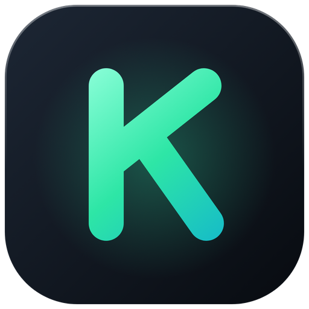

Sube
Arrastra tus vídeos y súbelos en segundos.

Klaro DescargarPara Windows
Sube tus vídeos y gestiónalos desde un solo lugar. Sin ruido, sin complicaciones.
Arrastra tus vídeos y súbelos en segundos.
Ordena, renombra y encuentra cualquier vídeo al instante.
Todo tu contenido bajo control, en una interfaz limpia.
KlaroLauncherSetup.exe.